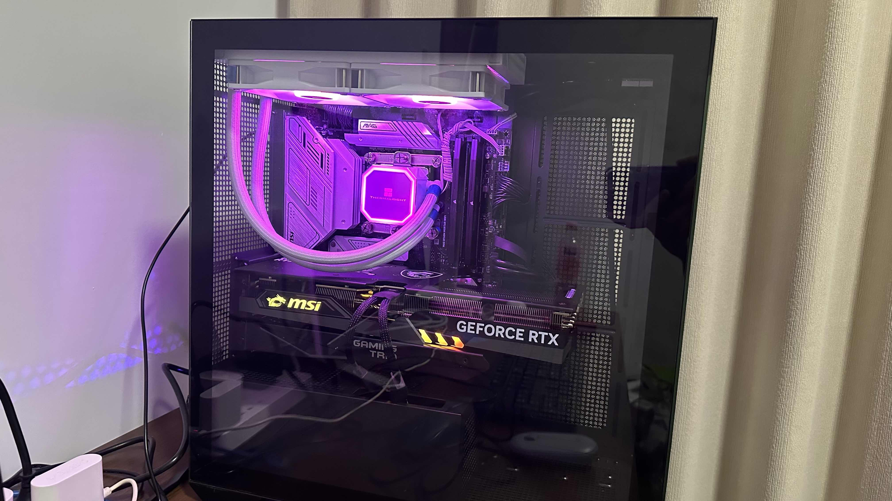
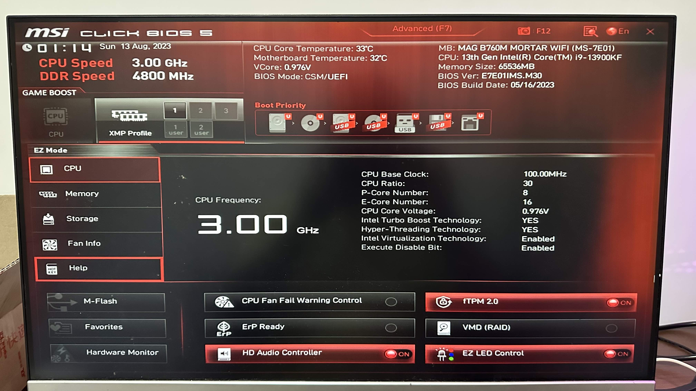

コンピュータの組み立て方 | オリジナル、AI翻訳

ビデオ
クイック概要
- 私たちは機械学習を行うためのコンピュータを作りたいと考えています。2023年までに最新で手頃な価格の部品を購入して組み立てます。
- Intel Core i9-13900KF、MSI MAG B760M Mortar マザーボード、MSI Gaming GeForce RTX 4070 グラフィックスカードなどの部品を購入しました。
- コンピュータが起動しませんでした。2回専門家に助けを求めました。1回目はマザーボードの電源コネクタが緩んでいたためで、2回目はフロントパネルのスタートボタンのコネクタが緩んでいたためです。
- 私たちの場合、垂直GPUブラケットを購入する必要はありませんでした。迅速な解決策として余分な部品を購入するのではなく、原因を慎重に分析すべきです。
- ケーブルをコンピュータケースの反対側に配置すべきです。そうすればケーブルがマザーボードを覆うことがなく、マザーボードをはっきりと見ることができます。
- 特にマザーボード、PCケース、電源ユニット、その他の部品間の互換性に重点を置くべきです。これらの部品は他の部品と多く相互作用します。
原則
- グローバルに比較する。例えば、中国のJD.com、日本の楽天、アメリカのAmazonなど。
- Amazonには、同じシリーズの製品を比較するための優れた表があります。
- 学ぶための最良の入門書を見つけ、否定的なコメントをチェックする。
- 高価な2つのアイテム、CPUとGPUに焦点を当てる。
- 購入決定における最大の間違いは何か？
- メーカーのウェブサイトに行き、詳細を確認する。
- アイテムの互換性を確認する。
- アイテムの仕様については、旅の中で慣れていきます。
- ウェブサイトと参考リンクを行き来して学ぶことができます。
- 最終的な計画を立てることで、より多くのことを知り、重要な質問を明らかにすることができます。
- あなたが手頃な価格で購入できる最高で最新の製品を購入してください。
ウェブサイト
- フランス, https://www.cdiscount.com
- グローバル, https://www.amazon.com
- 日本, https://www.rakuten.com
- 中国, https://jd.com
- 韓国, https://www.coupang.com
- グローバル, https://www.ebay.com
- ドイツ, https://www.otto.de
- 北米, https://www.bestbuy.com
スタート
これは私が中国のアプリ「小红书」で見つけたものです。
- グラフィックカード（GPU）：MSI 3080 – 5219元
- マザーボード + CPU：ASUS Z790-P + i7-13700KF – 4349元
- ソリッドステートドライブ（SSD）：Western Digital 1TB – 448元
- ハードディスクドライブ（HDD）：Western Digital 2TB – 338元
- RAM：Kingston 16GB*2 – 598元
- 冷却システム：Thermaltake 360 水冷 – 334元
- 電源：Great Wall 85W – 603元
- ケース：Aigo – 264元
- マウス + キーボード：400元
- モニター：Dell U2723QX – 3600元
- 総額概算：16000元
学びと比較
GPU
Amazon、GIGABYTE GeForce RTX 3060 Gaming OC 12G (REV2.0) グラフィックスカード、3X WINDFORCEファン、12GB 192-bit GDDR6、GV-N3060GAMING OC-12GD ビデオカード
Amazon、MSI Gaming GeForce RTX 3080 LHR 10GB GDRR6X 320ビット HDMI/DP Nvlink Torx Fan 4 RGB Ampereアーキテクチャ OCグラフィックスカード（RTX 3080 Gaming Z Trio 10G LHR）（再生品）
Amazon, ASUS Dual GeForce RTX™ 4060 Ti OC Edition 8GB GDDR6 (PCIe 4.0対応、8GB GDDR6メモリ、DLSS 3、HDMI 2.1、DisplayPort 1.4a、Axial-techファンデザイン、0dBテクノロジー、その他多数)
Amazon、MSI Gaming GeForce RTX 3080 LHR 12GB GDRR6X 384ビット HDMI/DP Nvlink Torx Fan 3 Ampereアーキテクチャ OCグラフィックスカード（RTX 3080 Ventus 3X Plus 12G OC LHR）
Amazon、MSI Gaming GeForce RTX 4070 12GB GDRR6X 192ビット HDMI/DP Nvlink TORX Fan 4.0 Ada Lovelace アーキテクチャ グラフィックスカード (RTX 4070 Ventus 3X 12G OC)
Amazon、MSI Gaming GeForce RTX 4070 12GB GDRR6X 192ビット HDMI/DP Nvlink TORX Fan 4.0 Ada Lovelace アーキテクチャ グラフィックスカード (RTX 4070 Gaming X Trio 12G)
マザーボード
Amazon, ASUS ROG Strix B550-A Gaming AMD AM4 Zen 3 Ryzen 5000 & 3rd Gen Ryzen ATX ゲーミングマザーボード (PCIe 4.0, 2.5Gb LAN, BIOS Flashback, デュアル M.2 ヒートシンク付き, アドレサブル Gen 2 RGB ヘッダーおよび Aura Sync)
Amazon、MSI MAG B660 Tomahawk WiFi DDR4 ゲーミングマザーボード（ATX、第12世代 Intel Core、LGA 1700 ソケット、DDR4、PCIe 4、2.5G LAN、M.2 スロット、Wi-Fi 6）
Amazon、MSI B760 Gaming Plus WiFi ゲーミングマザーボード（第12世代/第13世代 Intel プロセッサ対応、LGA 1700、DDR5、PCIe 4.0、M.2、2.5Gbps LAN、USB 3.2 Gen2、Wi-Fi 6E、ATX）
Amazon, MSI MAG B760M Mortar WiFi ゲーミングマザーボード（第12/13世代 Intel プロセッサ対応、LGA 1700、DDR5、PCIe 5.0、M.2、2.5Gbps LAN、USB 3.2 Gen2、Wi-Fi 6E、mATX）
Amazon、ASUS TUF Gaming Z790-Plus WiFi LGA 1700（Intel®12th＆13th Gen）ATXゲーミングマザーボード（PCIe 5.0、DDR5、4xM.2スロット、16+1 DrMOS、WiFi 6、2.5Gb LAN、フロントUSB 3.2 Gen 2 Type-C®、Thunderbolt 4（USB4）、Aura RGB）
Amazon、ASUS Prime Z790-P WiFi LGA 1700（Intel® 13th & 12th Gen）ATXマザーボード（PCIe 5.0、DDR5、14+1パワーステージ、3X M.2、WiFi 6、Bluetooth v5.2、2.5Gb LAN、フロントパネルUSB 3.2 Gen 2 Type-C®、Thunderbolt™ 4/USB4）
CPU
Amazon, Intel Core i7-13700KF（最新世代）ゲーミングデスクトッププロセッサー 16コア（8 P-コア + 8 E-コア） - アンロック、
楽天、Intel Core i7 13700KF BOX 第13世代インテルCore i7プロセッサー GPU非搭載 CPU
JD.com、インテル(Intel) Core Pentium CPUプロセッサー、デスクトップ用、オリジナルボックス、第12世代 i9-12900KF【16コア24スレッド】、3799元
Amazon、Intel Core i9-13900KF（最新世代）ゲーミングデスクトッププロセッサー、24コア（8 P-コア + 16 E-コア） - アンロック済み
ソリッドステートドライブ
Amazon、Western Digital 1TB WD Blue SN570 NVMe 内蔵ソリッドステートドライブ SSD - Gen3 x4 PCIe 8Gb/s、M.2 2280、最大3,500 MB/s - WDS100T3B0C
JD、サムスン（SAMSUNG）1TB SSDソリッドステートドライブ M.2インターフェース（NVMeプロトコルPCIe 4.0 x4）980 PRO （MZ-V8P1T0BW）
楽天、Western Digital 1TB WD グリーン 内蔵SSD ソリッドステートドライブ - SATA III 6Gb/s 2.5/7mm 最大545MB/s - WDS100T3G0A
Walmart、WD Blue 1TB SA510 SATA 内蔵ソリッドステートドライブ SSD - WDBB8H0010BNC-WRWN
Amazon、SAMSUNG 870 EVO SATA III SSD 1TB 2.5インチ 内蔵ソリッドステートドライブ、ITプロフェッショナル、クリエイター、日常ユーザー向けのPCまたはラップトップのメモリとストレージのアップグレード、MZ-77E1T0B/AM
Amazon、SAMSUNG 980 SSD 1TB PCle 3.0x4、NVMe M.2 2280、内蔵ソリッドステートドライブ、PC、ノートパソコン、ゲームなど向けストレージ、HMBテクノロジー、インテリジェントターボライト、最大3,500MB/sの速度、MZ-V8V1T0B/AM
ハードディスクドライブ
Amazon、Seagate Portable 2TB 外付けハードドライブ HDD — USB 3.0対応、PC、Mac、PlayStation、Xbox用 - 1年救出サービス付き (STGX2000400)
Amazon、WD 6TB My Book デスクトップ外付けハードドライブ、USB 3.0、パスワード保護と自動バックアップソフトウェア付き外付けHDD - WDBBGB0060HBK-NESN
Amazon, Seagate ST8000DM008 BarraCuda 8TB 内蔵ハードドライブ HDD – 3.5インチ SATA 6 Gb/s 5400 RPM 256MB キャッシュ デスクトップコンピュータ用
JD.com、Western Digital（西部数据）のデスクトップ用機械式ハードディスク「WD Blue 西数ブルーディスク 4TB 5400回転 256MB SATA CMR」
JD.com、シーゲート（Seagate）デスクトップ用HDD 2TB 7200回転 256MB SATA 機械式ハードディスク シーゲートBarraCudaシリーズ(ST2000DM008)
RAM
Amazon、CORSAIR VENGEANCE DDR5 RAM 32GB (2x16GB) 5600MHz CL36 Intel XMP iCUE対応 コンピュータメモリ - ブラック (CMK32GX5M2B5600C36)
Amazon、Corsair VENGEANCE LPX DDR4 RAM 32GB (2x16GB) 3200MHz CL16 Intel XMP 2.0 コンピュータメモリ - ブラック (CMK32GX4M2E3200C16)
Amazon、Samsung 16GB DDR4 3200MHz SODIMM PC4-25600 CL22 2Rx8 1.2V 260ピン SO-DIMM ノートパソコン用RAMメモリモジュール M471A2K43DB1-CWE
Amazon、CORSAIR Vengeance DDR5 RAM 64GB (2x32GB) 6000MHz CL30 AMD Expo iCUE 対応 コンピュータメモリ - グレー (CMK64GX5M2B6000Z30)
JD.com、美商海盗船（USCORSAIR）64GB（32G×2）セット DDR5 6000 デスクトップ用メモリ アベンジャーシリーズ ゲーミングタイプ ブラック
コンピュータークーラー
Amazon、ID-COOLING FROSTFLOW X 240 CPUウォータークーラー AIOクーラー 240mm CPUリキッドクーラー ホワイトLED 2x120mm PWMファン、Intel 1700/1200/115X、AMD AM5/AM4対応
Amazon、Thermalright Frozen Prism 240 Black ARGB 液体CPUウォータークーラー、120mm ARGB PWMファン付き、240 Black コールドロー仕様、AMD/AM4/AM5対応コンピュータウォータークーラー
Amazon、Thermalright Frozen Magic 240 Scenic V2 水冷CPUクーラー、240ホワイト冷却ロー仕様、2×120mm PWMファン、S-FDB V2.0ベアリング、AMD/AM4/AM5、Intel 1700/1150/1151/1200/2066対応
JD.com、大水牛（BUBALUS）Q6 CPUクーラー（AMD/マルチプラットフォーム対応/9CMブルーライトファン/シリコングリス付属/デスクトップPC用空冷クーラー）
JD.com、Thermalright Frozen Prism 240
コンピュータの電源
Amazon、Thermaltake SMART 600W ATX 12V V2.3/EPS 12V 80 Plus認証 Active PFC電源ユニット PS-SPD-0600NPCWUS-W
Amazon、Thermaltake Toughpower GX1 RGB 600W Gold SLI/Crossfire対応 連続出力 RGB LED ATX12V v2.4 / EPS v2.92 80 Plusゴールド認証 5年保証 非モジュラー電源ユニット PS-TPD-0600NHFAGU-1
Amazon, Thermaltake Toughpower GF1 650W 80+ Gold SLI/CrossFire対応 超静音 140mm油圧ベアリング スマートゼロファン フルモジュラー電源 10年保証 PS-TPD-0650FNFAGU-1
Amazon、Corsair CX750F RGB、750ワット、80 PLUS Bronze認証、フルモジュラー式RGBホワイト電源ユニット
JD.com、Corsair CX650F RGB、750ワット、80 PLUS、フルモジュラーRGBホワイト電源
PCケース
Amazon、SZSKYING Gaming PCケース、10個のファン付きARGB、コンピュータータワーケース Airflow 3.0 USB、強化ガラスパネル、リモコン付きブラック。
JD.com、Aigo Yogo M2
JD.com、Aigo 月光宝盒 Jing Mini
参考
さまざまなIntel Coreについて学びましょう。
ChatGPTに聞いてみる：
Intel CPUにおけるP-コアとE-コアの違いは何ですか？
Intelの最新世代のプロセッサでは、P-コア（Performance Cores）とE-コア（Efficient Cores）という2種類のコアが搭載されています。これらのコアは、異なる目的で設計されており、それぞれ異なる特性を持っています。
P-コア（Performance Cores）
- 目的: 高いシングルスレッド性能を提供し、重いタスクやゲーム、クリエイティブな作業など、高い計算能力を必要とする作業に最適化されています。
- 設計: より複雑で高性能なアーキテクチャを持ち、クロック速度が高く、キャッシュメモリも大きいです。
- 電力消費: 高い性能を発揮するため、電力消費も大きくなります。
E-コア（Efficient Cores）
- 目的: マルチスレッド性能を向上させ、バックグラウンドタスクや軽い作業を効率的に処理するために設計されています。
- 設計: シンプルでコンパクトなアーキテクチャを持ち、クロック速度は低く、キャッシュメモリも小さいです。
- 電力消費: 低電力で動作するため、バッテリー駆動時間の延長や発熱の低減に貢献します。
まとめ
- P-コア: 高い性能を必要とするタスクに最適。
- E-コア: 効率的な電力消費とマルチスレッド性能を重視。
Intelのハイブリッドアーキテクチャ（例: Alder Lake, Raptor Lake）では、これらのコアを組み合わせることで、高い性能と効率的な電力消費の両立を実現しています。OSやアプリケーションがこれらのコアを適切に活用することで、最適なパフォーマンスと電力効率が得られます。
i9とi7の違いは何ですか？
機械学習を行いたい場合、i7とi9のどちらを購入すべきか迷っているかもしれませんね。以下にいくつかのポイントを挙げますので、参考にしてください。
1. コア数とスレッド数
- i7: 一般的に、i7プロセッサは6コア12スレッドまたは8コア16スレッドのモデルがあります。
- i9: i9プロセッサは、より多くのコアとスレッドを提供し、10コア20スレッドや12コア24スレッドのモデルがあります。
機械学習では、特に大規模なデータセットや複雑なモデルを扱う場合、より多くのコアとスレッドが有利です。i9はi7よりも多くのコアとスレッドを提供するため、並列処理能力が高く、機械学習タスクに適しています。
2. クロック速度
- i7: 通常、i7はi9よりも高いベースクロック速度を持っています。
- i9: i9は、より多くのコアを持っているため、ベースクロック速度は低めですが、ターボブースト時の最大クロック速度は高いです。
機械学習では、クロック速度も重要ですが、特に並列処理が求められるタスクでは、コア数とスレッド数の方が重要です。i9は、ターボブースト時の高いクロック速度を活かして、単一スレッドのパフォーマンスも向上させることができます。
3. 価格
- i7: i7はi9よりも一般的に価格が低いです。
- i9: i9は高性能であるため、価格が高くなります。
予算に余裕がある場合は、i9を選ぶことでより高いパフォーマンスを得ることができますが、予算が限られている場合は、i7でも十分なパフォーマンスを発揮することができます。
4. 電力消費と発熱
- i7: i7はi9よりも電力消費が少なく、発熱も少ない傾向があります。
- i9: i9はより多くのコアと高いパフォーマンスを提供するため、電力消費と発熱が大きくなります。
特にノートパソコンを使用する場合、電力消費と発熱は重要な考慮事項です。i9は高性能ですが、冷却システムが十分でない場合、熱によるスロットリングが発生する可能性があります。
結論
- i9を選ぶべき場合:
- 大規模なデータセットや複雑なモデルを扱う予定がある。
- 並列処理能力が求められるタスクが多い。
- 予算に余裕があり、冷却システムが十分である。
- i7を選ぶべき場合:
- 予算が限られている。
- 比較的小規模なデータセットやモデルを扱う予定がある。
- 電力消費と発熱を抑えたい。
最終的には、自分の使用ケースと予算に応じて、i7とi9のどちらを選ぶかを決めることが重要です。
i9 13900
https://cpu.userbenchmark.com/Compare/Intel-Core-i9-13900-vs-Intel-Core-i9-13900F/m1977296vsm1994287
Intelプロセッサーの「F」は、内蔵グラフィックス（iGPU）が無効化されていることを示しています。通常、Intelのプロセッサーには内蔵グラフィックスが搭載されていますが、「F」が付いたモデルではこの機能が削除されています。そのため、「F」付きのプロセッサーを使用する場合、別途グラフィックスカード（GPU）が必要となります。
例えば、Intel Core i7-9700KとIntel Core i7-9700KFを比較すると、後者の「KF」モデルは内蔵グラフィックスが無効化されています。このようなプロセッサーは、グラフィックス性能を必要としないユーザーや、高性能な外部GPUを使用するユーザーにとってコストパフォーマンスが良い選択肢となることがあります。
Intel® Core™ デスクトッププロセッサの製品ラインサフィックスにFの文字が含まれている場合、システムにはディスクリートグラフィックスカードを使用する必要があります。統合グラフィックスポートを使用すると、プロセッサは起動しません。
IntelのKとF、どちらが優れているのでしょうか？
Intelのプロセッサには、さまざまなサフィックスが付いていますが、その中でも「K」と「F」は特に注目されることが多いです。それぞれの特徴を理解することで、どちらが自分のニーズに合っているかを判断できます。
Intel Kシリーズ
- アンロックされた倍率: Kシリーズのプロセッサは、倍率がアンロックされているため、オーバークロックが可能です。これにより、パフォーマンスをさらに引き出すことができます。
- グラフィックス統合: Kシリーズのプロセッサには、通常、Intel UHDグラフィックスが統合されています。これにより、別途グラフィックスカードを用意しなくても、基本的なグラフィックス処理が可能です。
Intel Fシリーズ
- グラフィックス非統合: Fシリーズのプロセッサには、グラフィックス機能が搭載されていません。そのため、別途グラフィックスカードが必要です。
- コストパフォーマンス: グラフィックス機能がない分、Kシリーズよりも価格が抑えられていることが多いです。既に高性能なグラフィックスカードを持っている場合や、グラフィックス処理を必要としない場合には、コストパフォーマンスが良い選択肢となります。
どちらが良いか？
- オーバークロックをしたい場合: Kシリーズが適しています。オーバークロックにより、より高いパフォーマンスを引き出すことができます。
- グラフィックスカードを持っている場合: Fシリーズがコストパフォーマンスに優れています。グラフィックス機能が不要であれば、Fシリーズを選ぶことで予算を節約できます。
最終的には、自分の使用目的や予算に応じて、KシリーズとFシリーズのどちらを選ぶかを決めることが重要です。
Intelプロセッサに「K」が付いている場合、それはオーバークロック可能で、ロックが解除されていることを意味します。「F」は、プロセッサにiGPU（統合グラフィックス）がないことを示します。KFシリーズのプロセッサは、通常Kプロセッサよりも安価で、iGPUを持たないことが一般的です。
https://versus.com/en/asus-prime-z790-p-d4-vs-msi-mag-b760m-mortar-max-wifi
GeForce RTXTM 4070 GAMING X TRIO 12GとThermaltake Toughpower GF1 650Wの電源は互換性がありますか？
GeForce RTXTM 4070 GAMING X TRIO 12Gの電力要件は、通常650Wの電源で十分に対応できる範囲内です。Thermaltake Toughpower GF1 650Wは、80 PLUSゴールド認証を受けた高品質な電源であり、安定した電力供給を提供します。したがって、この組み合わせは問題なく動作するはずです。ただし、システム全体の電力消費量を考慮し、他のコンポーネントの電力要件も確認することをお勧めします。
製品の説明を注意深く学びましょう。例えば、このようなものです。
ASUS TUF Gaming Z790-Plus WiFi LGA 1700
- Intel LGA 1700ソケット: 第12世代および第13世代Intel Coreプロセッサーに対応、PCIe 5.0、DDR5をサポートし、Windows 11にすぐに対応
- 強化された電源ソリューション: 16+1 DrMOS、ProCoolソケット、軍用グレードのTUFコンポーネント、Digi+ VRMを搭載し、最大の耐久性とパフォーマンスを実現
- 包括的な冷却システム: VRMヒートシンク、PCHファンレスヒートシンク、M.2ヒートシンク、ハイブリッドファンヘッダー、Fan Xpert 4ユーティリティ
- 超高速ゲーミングネットワーキング: WiFi 6 AX201 (802.11 ax)、Intel I225-V 2.5Gb LAN、TUF LANGuardおよびTurboLANテクノロジー
- 最速の接続性: 4x M.2/NVMe SSD、フロントパネルUSB 3.2 Gen 2 Type-Cヘッダー、USB Gen 2x2 Type-CおよびThunderbolt 4 (USB4)ヘッダー
- PC DIYフレンドリー: SafeDIMM、PCIe 5.0 Safeslot、Q-LED、M.2 Q-Latch、プリマウントI/Oシールド
- 新しいTUF Gamingの美学: 新しいIDデザイン、互換性のあるPCギア全体で同期可能なLEDエフェクト、Aura Sync対応のアドレス可能なRGBストリップ
- 没入型ゲーミングオーディオ＆AIノイズキャンセレーション: Realtek S1200Aコーデックは、ゲームアクションに深く没入したり、お気に入りの音楽やビデオを強化するための高品質なオーディオを提供します。ASUS AIノイズキャンセリングマイクテクノロジーで明確にコミュニケーション
https://timdettmers.com/2023/01/30/which-gpu-for-deep-learning/
https://timdettmers.com/2018/12/16/deep-learning-hardware-guide/
https://www.msi.com/Graphics-Card/GeForce-RTX-4070-GAMING-X-TRIO-12G/Specification
https://www.intel.com/content/www/us/en/products/sku/230497/intel-core-i913900kf-processor-36m-cache-up-to-5-80-ghz/specifications.html
https://www.msi.com/Motherboard/MAG-B760M-MORTAR-WIFI
https://www.thermaltake.com/toughpower-gf1-650w-tt-premium-edition.html
https://file.thermaltake.com/file/qig/Connect_PCIe_Cables_to_High_Power_Consumption_GPU_en.pdf, 高消費電力のグラフィックスカードにPCIeケーブルを正しく接続する方法は？
https://www.whatpsu.com/psu/cpu/Intel-Core-i9-13900K/gpu/NVIDIA-GeForce-RTX-4070-Ti
このリンクは、Intel Core i9-13900K CPUとNVIDIA GeForce RTX 4070 Ti GPUを搭載したシステムに適した電源ユニット（PSU）を推奨するためのものです。このサイトでは、指定されたハードウェアに最適なPSUのワット数や種類を計算し、推奨する機能を提供しています。
https://pcpartpicker.com/forums/topic/359090-what-is-this-8-pin-connector-on-my-hard-drive, 私のハードドライブにあるこの8ピンコネクタは何ですか？
最終選択
JD.comより。
CPU, Intel Core i9-13900KF (最新世代) ゲーミングデスクトッププロセッサー 24コア (8 P-コア + 16 E-コア) - アンロック, 4709 CNY
マザーボード、MSI MAG B760M Mortar WiFi ゲーミングマザーボード（第12世代/第13世代 Intel プロセッサー対応、LGA 1700、DDR5、PCIe 5.0、M.2、2.5Gbps LAN、USB 3.2 Gen2、Wi-Fi 6E、mATX）、1299元
GPU、MSI Gaming GeForce RTX 4070 12GB GDRR6X 192ビット HDMI/DP Nvlink TORX Fan 4.0 Ada Lovelace アーキテクチャ グラフィックスカード (RTX 4070 Gaming X Trio 12G)、5199元
SSD、SAMSUNG 980 SSD 1TB PCle 3.0x4、NVMe M.2 2280、内蔵ソリッドステートドライブ、PC、ノートパソコン、ゲームなどに最適なストレージ、HMBテクノロジー、インテリジェントターボライト、最大3,500MB/sの速度、MZ-V8V1T0B/AM、399元
HDD、Western Digital 2TB WD Blue PC 内蔵ハードドライブ - 7200 RPM クラス、SATA 6 Gb/s、256 MB キャッシュ、3.5インチ - WD20EZBX、428元
RAM, CCORSAIR Vengeance DDR5 RAM 64GB (2x32GB) 6000MHz CL30 AMD Expo iCUE 対応 コンピュータメモリ - グレー (CMK64GX5M2B6000Z30), 1379 CNY
クーラー、Thermalright Frozen Prism 240 White ARGB AIO ウォータークーラー、リキッドCPUクーラー、2×120mm PWMファンウォータークーリングシステム、1850RPM高速回転、AMD/AM4/AM5 & Intel LGA1150/1151/1200/2011/1700対応、413元
電源ユニット、Corsair CX650F RGB、750ワット、80 PLUS認証、フルモジュラー式RGBホワイト電源、398元
PCケース、Aigo Yueguangbaohe Jing Mini、299元
SATAケーブル、Cable Matters 3-Pack 90度直角SATAケーブル 18インチ (6.0 Gbps SATA IIIケーブル、SSD用SATAケーブル、SATA SSDケーブル、SATA 3ケーブル) ブラック、19元
マウス、キーボード、モニター: 家に余分なものは既に持っています。
合計：約14000元
これは私が知っていることと予算を考慮した上での最終的な決定です。あなたもぜひリサーチを行ってください。
インストールガイド
http://intel.cn/ProcessorInstall
https://www.intel.cn/content/www/cn/zh/support/articles/000088402/processors.html
CORSAIR CX-F RGBシリーズ電源ユニットのセットアップ方法
PCビルドチュートリアル（完全版） - MSI
https://youtu.be/qCPIEYfN_hc THERMALRIGHT FROZEN PRISM CPUクーラー インストールガイド for intel LGA1700, AMD AM4 AM5
MSI® フロントパネルコネクタ（JFP1）の取り付け方法
PCケーブル、電源ケーブルなどの接続場所 - コンピュータ配線のコツ
グラフィックカードの取り付けは本当に簡単です！たった4つの簡単なステップで、初心者の方にも特別に用意しました。
BIOS情報
CPU情報:

ファン、メモリ、ストレージの情報もあります。
オペレーティングシステムのインストール
Ubuntu公式サイト
5ステップでUbuntuとGPUアクセラレーションを備えた機械学習環境を構築
macOSでブート可能なUSBスティックを作成する
https://ubuntu.com/tutorials/create-a-usb-stick-on-macos#4-install-and-run-etcher
Ubuntuデスクトップをインストール
https://ubuntu.com/tutorials/install-ubuntu-desktop
リフレクション
ケーブルはコンピュータケースの反対側に配置すべきです。そうすれば、ケーブルがマザーボードを覆うことがなくなり、マザーボードをはっきりと見ることができます。
事前にカスタマーサポートに問い合わせて、インストール動画などの有用な情報をすべて入手するべきです。彼らは、eコマースプラットフォーム上で動画を表示するよりも、大規模な動画プラットフォームに長い動画をアップロードすることを好みます。
私たちは専門家に2回、コンピュータが起動しない理由を確認してもらいました。1つは、マザーボードの電源コネクタが緩んでいること。もう1つは、フロントパネルの起動ボタンのコネクタが緩んでいることです。
専門家に助けを求める際、私たち自身が学ぶために自分で行う必要があります。彼らは私たちを導くだけにすべきです。そうでなければ、次に問題に直面したときに何をすべきかわからず、簡単に忘れてしまうでしょう。
私たちの場合、このような垂直GPUブラケットを購入する必要はありません。迅速な解決策として余分な部品を購入するのではなく、慎重に分析するべきです。
私たちは、特にマザーボード、PCケース、電源ユニット、その他のコンポーネント間の互換性に焦点を当てるべきです。これらのコンポーネントは他の部品と頻繁に相互作用します。
更新
12GBのVRAMでは私のニーズに十分でないことが判明し、より大きなグラフィックカードを選ばなかったことを後悔しています。